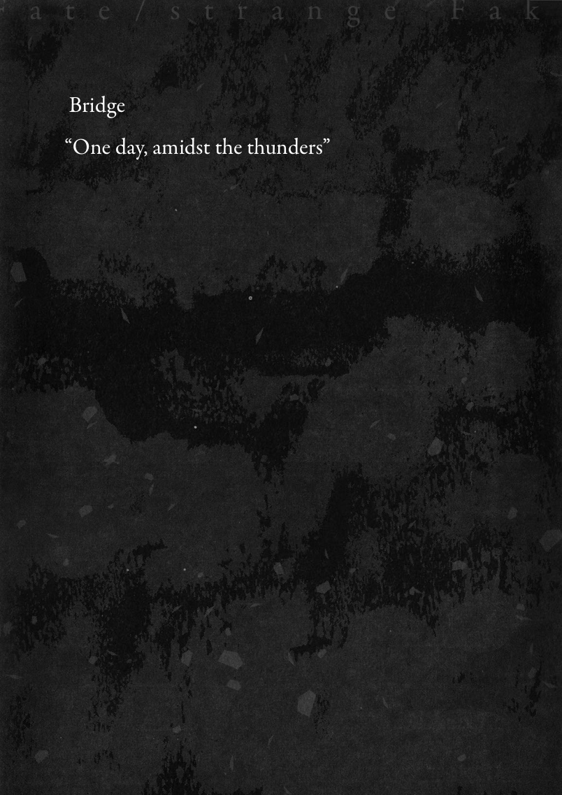
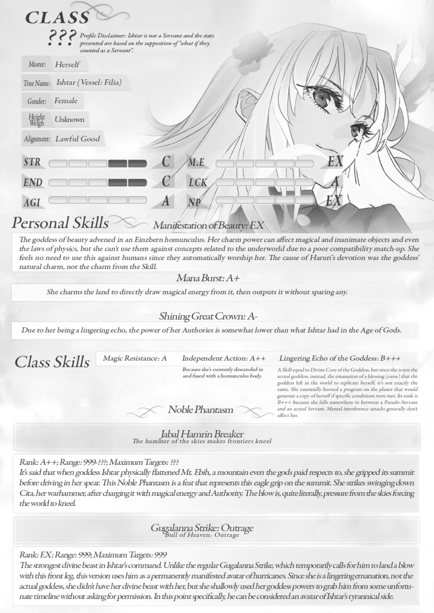
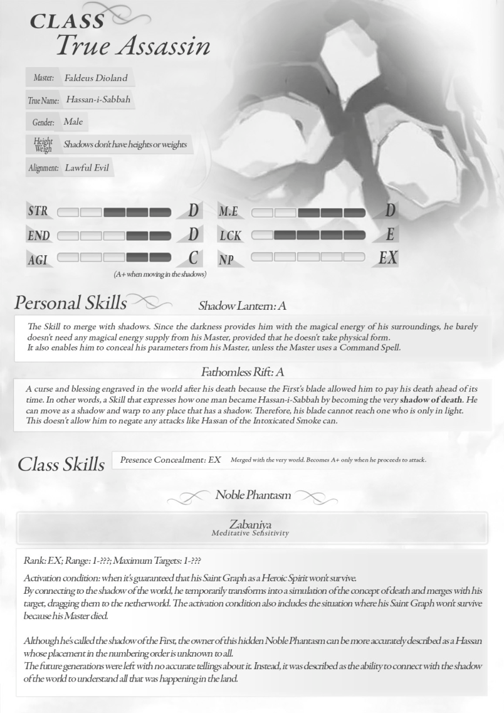

"Um dia, em meio aos trovões"
Algumas horas depois, em algum lugar de Snowfield
"Vocês todos... precisam ir embora agora", disse o garoto inumano nos céus aos magos reunidos no chão.
"Logo você devia saber que não podemos", rebateu Svin.
"Flat se foi. Se houvesse algum jeito de trazê-lo de volta, eu já teria feito isso", respondeu o garoto no céu, Thia Escardos.
Enquanto uma Energia Mágica avassaladora circulava ao seu redor na forma de Satélites, Thia tentava expulsar com palavras os magos abaixo dele, os membros da sala de aula do El-Melloi.
"Vocês não têm obrigação nenhuma de ficar para assistir ao colapso da cidade."
Dito isso, voltou os olhos para as nuvens de trovão que cobriam o céu inteiro.
Algumas horas antes, o furacão a oeste se manifestava como o Touro dos Céus. Agora, porém, aquela massa de cumulonimbus viva, composta de poder e destruição, a calamidade que destruiria a cidade, era outra coisa por completo.
"...Fiquei tão surpreso quanto vocês. Ele conseguia tomar mais do que apenas o Fantasma Nobre do nosso Servo... o Fantasma Nobre de Jack the Ripper. Flat e eu achávamos que ele só podia roubar Fantasmas Nobres de Servos, mas estávamos errados..."
Os alunos capazes de perceber o fluxo da Energia Mágica compreenderam de imediato o que estava acontecendo.
O furacão, antes com centenas de quilômetros de diâmetro, havia sido reduzido a apenas alguns quilômetros.
Mas a queda de Ishtar ao submundo não o enfraquecera nem um pouco. Toda a energia do redemoinho fora comprimida num único ponto, ou, mais precisamente, num único Servo no olho da tempestade.
A terra e o céu estavam tomados por relâmpagos incessantes. Estava claro que qualquer um que ousasse se aproximar seria carbonizado pela chuva elétrica sem chance de sobrevivência.
"Eu nunca imaginei que ele seria capaz de saquear por completo o Núcleo Conceitual de uma besta divina", disse Thia baixinho, observando o Servo no centro da tormenta: o avenger Alcides. "Ou... vocês estão pensando mesmo em enfrentar aquele monstro?"
"Certamente", respondeu Hippolyte, montada em seu cavalo de guerra. "Ele é... meu inimigo. Detê-lo é a razão de eu permanecer nesta terra."
"..."
Thia fitou Hippolyte em silêncio. Em poucas horas, a qualidade de sua Origem Espiritual havia se elevado ainda mais. Aquilo era o resultado da carga de Energia Mágica de trinta Mestres, refinada com cuidado para evitar rejeição.
Mas nem assim ele acreditava que ela pudesse vencer o demônio que roubara o raio de um deus.
"Então você escolhe morrer lutando em vez de se render? Ou talvez..."
Então Thia moveu o olhar para outro ponto. O corpo de Filia, o Graal Menor que já não abrigava mais uma deusa, estava desfalecido sob a proteção da sala de aula do El-Melloi.
E, ajoelhada ao lado dela, a garota aflita: Ayaka Sajou.
"Ela... realmente acha que pode ser aliada da humanidade? Não acham estranho que consiga permitir sem parar que dois Espíritos Heroicos disparem Fantasmas Nobres o tempo todo? Acham normal que ela seja uma fonte infinita de Energia Mágica?"
Palavras de Reines El-Melloi Archisorte.
"O maior dano material ao nosso patrimônio... foi algo que nem os outros Lords conseguiriam obter com facilidade. Não é por acaso que aquele objeto foi o Artefato Místico Supremo dos El-Melloi até o El-Melloi anterior aperfeiçoar Trimmau."
O Lord El-Melloi anterior fora Kayneth El-Melloi Archibald. A garota daquela linhagem narrou com apatia a história de como ele perdera a vida na terra de Fuyuki.
"Sim... a perda daquilo pelo Lord anterior na batalha de Fuyuki foi a maior das cinco perdas fatais que sofremos."
Reines explicou o que era o objeto, com um toque de divertimento, ou talvez uma tentativa deliberada de provocar a ouvinte.
"Cada um deles pode produzir Energia Mágica suficiente para manter um prédio inteiro isolado do mundo por semanas... e, se você faz os três interagirem entre si, a taxa natural de recuperação da energia dispara. Séculos atrás, os El-Melloi processaram Fantasmais de altíssimo nível extraídos das minas e completaram o reator perfeito de Energia Mágica. Ele não tem nada de extraordinariamente único, mas sua produção bruta pode esmagar qualquer um. É o símbolo supremo do 'o simples é melhor', o que o torna a ferramenta perfeita para a família El-Melloi, tão louvada por sua versatilidade. Bem, o atual Artefato Místico Supremo dos El-Melloi vai para o extremo oposto, com personalidade até demais."
A garota falava com alegria caprichosa apesar de se tratar de itens que pertenciam à sua família. A criada de mercúrio ao lado dela era o atual Artefato Místico Supremo dos El-Melloi. Isto é, um Artefato Místico que simboliza sua posição como uma das doze famílias de Lord da Torre do Relógio.
"Nosso estimado predecessor dizia que um artigo que só produz Energia Mágica carece de arte, e por isso criou esta Trimmau aqui, a Volumen Hydrargyrum, para ser o novo Artefato Místico Supremo."
Em outras palavras, o item descrito por Reines podia rivalizar em absurdo com uma massa humanoide de mercúrio vivo de altíssimo nível, dotada de mente própria.
"Bem, se o Lord anterior descobrisse que meu irmão lhe instalou um ego para facilitar o meu uso dela, chamaria isso de um rebaixamento."
Depois desse comentário, o canto da boca de Reines se torceu num sorriso, e ela voltou ao assunto do antigo Artefato Místico Supremo.
"Você, naturalmente, conhece o Túmulo Espiritual de Albion, certo? O último dragão abriu caminho até a terra fantasmal até se esgotar, e seu corpo ficou para trás como um labirinto gigantesco. Na era de ouro dos El-Melloi, gente da família explorou a mina subterrânea criada por esse dragão e, por meio de seus mais engenhosos jogos políticos, os El-Melloi obtiveram os vários materiais fantasmagóricos usados para fabricar esses reatores... Sabemos que o Lord anterior perdeu a cabeça por causa dos encantos de uma mulher, então, honestamente, o simples fato de levar aquilo para fora do país para um ritual do Leste Asiático já devia ter sido prova suficiente de que ele estava completamente fora de si."
Reines tomou um gole de chá enquanto saboreava a chance de fazer comentários cínicos sobre o próprio parente.
"E o pior de tudo... quando aquela oficina de outro mundo... isto é, quando aquele hotel de Fuyuki desabou, alguém roubou os itens. Nosso principal suspeito morreu, e desde então ficamos sem informação nenhuma sobre o ladrão."
Foi aí que Reines interrompeu a explicação para lançar uma pergunta à ouvinte.
"Como você já investigou a Guerra do Santo Graal de Fuyuki antes, talvez tenha ouvido falar deste caso. O assassinato brutal de um casal de magos nos Apartamentos Semina, em Kurokizaka."
Reines sorriu de forma quase sádica enquanto bebericava seu chá.
"Não é algo tão grandioso quanto o Santo Graal... mas há magos que começariam uma guerra por isso", disse, como se aguardasse com carinho o dia em que alguns magos travariam um conflito idiota por aqueles objetos ainda espalhados pelo mundo.
"Por esse conjunto de três reatores de Energia Mágica."
"Ela... no fim vai se tornar inimiga da humanidade. Igual a mim", declarou Thia, apontando para Ayaka ajoelhada.
E, como sempre, o primeiro a erguer a voz em defesa de Ayaka foi o Saber à sua frente.
"Ora, vamos lá, ninguém gosta quando as pessoas falam como se fossem profetas, sabia? Veja o Saint-Germain. As profecias dele acertam em cheio uma vez atrás da outra, e mesmo assim isso nunca impediu ninguém de achá-lo uma tremenda irritação!"
"Você é o Saber?"
"Mas bem, se Ayaka vier a se tornar inimiga da humanidade, eu me disponho a me juntar a ela. Aqui vai uma profecia minha: se isso acontecer, não acho que será Ayaka quem vai começar a luta, ouviu?"
Saber podia soar despreocupado, mas sua Energia Mágica já estava refinada e pronta para disparar um Fantasma Nobre contra Thia a qualquer instante.
"Posso afirmar em alto e bom som que minha Mestra... Ayaka não vai se tornar inimiga da humanidade. O mais correto seria dizer que a humanidade é que vai se tornar inimiga de Ayaka."
Mas a Ayaka devastada agarrou a mão de Saber.
"Ayaka?"
"Não... eu não sou Ayaka", disse ela, com os olhos e os lábios tremendo de angústia e medo. "Eu me lembrei... Eu me lembrei de tudo... Eu me lembro...!"
Seu olhar caiu sobre Filia. Com os resquícios da deusa desaparecidos, Filia estava deitada, dormindo. Com a hipnose desfeita, a comporta das memórias de Ayaka se abrira por completo.
Experimentando o que era ficar sem força alguma, Ayaka ainda quis se agarrar a algo. Por isso, segurou a mão de Saber... e soltou um grito entrecortado de choro.
"Aquela não sou eu... Eu não sou Sajou Ayaka!"
Soava como uma confissão de pecados a Saber. Como se ela rejeitasse por completo a pessoa que fora antes.
"Sou eu... fui eu... Eu sou a Chapeuzinho Vermelho. Fui eu quem fez aquilo... Eu era a assassina."
Próximo episódio [Fake09]


Posfácio
Quanto tempo. Aqui é o Narita Ryogo.
Bem, finalmente os corpos começaram a cair. "Certo, vou seguir o plano original e fazer todo mundo trabalhar junto para derrotá-la no primeiro terço do livro... NÃO! Não posso deixá-la sair de cena tão rápido! Ela não é o chefão infame da raid! (rasga o manuscrito)"
"Isso combina mais com a forma como a força dela foi retratada antes... Ah, não, eu a deixei forte demais! Nesse ritmo, vão precisar de mais dois volumes para derrotá-la! (rasga o manuscrito)"
"Uf, uf, certo, aqui vai uma ideia: ******** entra na luta e faz o ******** antes do que eu planejava... Nem pensar! ******** jamais permitiria algo tão atabalhoado! (rasga o manuscrito)"
Na prática, não estou rasgando manuscritos, e sim apagando dados digitais, mas o ponto aqui é contar o que me levou a reescrever mais da metade deste volume três vezes... Minha decisão final foi convocar o Duque Saqueador de poltrona, o Sr. El-Melloi II, e o grande arco do empregador da nossa querida Srta. Xu Fu para celebrar os ritos fúnebres do céu azul.
Em contraste, o choque entre Vênus e as Sombras era uma disposição que eu tinha em mente desde que apresentei o True Assassin, e quero me dar um tapinha nas costas por finalmente tê-lo colocado no papel...!
Como vocês podem imaginar pela última cena, um dos pilares da narrativa de FsF é justamente quais elementos das histórias de Fuyuki vazaram para o mundo maior.
Esse é o principal motivo para El-Melloi II ganhar tanto tempo de tela aqui, mas isto não é Case Files, então esta foi sua última contribuição ativa.
Daqui em diante, será a vez de seus alunos se relacionarem com os colegas e com os Espíritos Heroicos para formar um novo futuro. E, além deles, temos a história de Ayaka e Saber se aproximando do clímax, enquanto Sigma enfim assume o centro do palco em vez de ficar relegado aos interlúdios, depois de escolher enfrentar os mentores da guerra.
O volume 8 deu início ao efeito dominó de participantes sendo retirados da Guerra do Santo Graal. Espero que vocês aproveitem esta Guerra do Santo Graal Falsa por aquilo que provavelmente serão mais dois volumes...!
Aliás, o interlúdio deste volume, "Você tem atores suficientes em estoque?", era um título provisório que eu esqueci de corrigir antes de mandar para a revisão. Isso rendeu do Nasu uma reação na linha de "Meu Deus, não acredito em você!", e a única desculpa que consegui dar foi "culpa da minha mão, minha mão escreveu isso sozinha". Mas, como ele não disse "não faça isso", deixei desse jeito. Não contem ao Nasu.
Além disso, muitos revisores me disseram que o cérebro deles travava ao ler o nome Templo Neo-Ishtar em cenas sérias, mas eu vinha dizendo Templo Neo-Ishtar com a maior cara séria o tempo todo e nunca tinha percebido como o nome era engraçado até os leitores apontarem. Também não contem isso para eles. Certo, eu menti. Mesmo depois de me dizerem que o nome é bobo, eu continuo falando Templo Neo-Ishtar com a maior cara séria. Viva!
Também aconteceu algo enorme entre este livro e o próximo. Um anime! Isso mesmo, um anime! Animação! Um anime especial da série Fake está sendo produzido e, quando este volume sair, um PV de cinco minutos já terá ido ao ar no especial de Ano-Novo! O anime está sendo produzido pelos dois diretores, Enokido e Sakazume, que trabalharam em muitos comerciais e vídeos de aniversário de FGO. O PV está online, então procurem se ainda não viram!
O plano original era exibir um especial de TV cobrindo o volume 1, mas, por causa de circunstâncias da vida real, a conclusão agora ficou programada para o verão.
Encantado com a qualidade do PV, fiquei andando em círculos pelo quarto, murmurando que esperaria o tempo que fosse preciso. Espero que vocês fiquem empolgados o bastante para se juntar a mim nessa corrida em círculos!
Agradecimentos especiais: primeiro ao meu editor, Anan, a quem dei mais trabalho do que de costume desta vez. E também a todo o pessoal da editora e a II-V, que acompanha meu cronograma.
À equipe de Fate/, que discutiu comigo várias partes da obra. Ao produtor Kurosaki e à sua excelente equipe, tanto pelo trabalho no anime quanto pelo novo material de referência sobre os Estados Unidos que me forneceram...!
A Team Barrel de Miwa Kiyomune, pela investigação histórica para o conteúdo de magia e para o lore de um dos Servos. O próprio Miwa também trabalhou como supervisor de magia no anime e ajudou em alguns pontos, como na criação do encantamento do mago sem nome que invocou o Rei dos Heróis!
A Sanda Makoto, por supervisionar os personagens de Case Files, pesquisar o lore da série e me dar inúmeras sugestões. Ele editou praticamente todas as falas de El-Melloi II e Reines...! Em troca, vou fazer revisões pesadas nas falas do Flat no próximo volume de Adventures...!
E a Morii Shizuki, por dar vida à história e aprofundar os personagens com ilustrações maravilhosas, tanto na capa quanto no interior do livro. Obrigado também por atuar, no anime, tanto como editora visual quanto como editora de roteiro...!
E, acima de tudo, obrigado ao Nasu e à equipe da TYPE-MOON por criarem a série e supervisionarem meu trabalho. E à equipe de Fate/Grand Order por me permitir escrever os Interlúdios do Enkidu. E a você, que escolheu pegar este livro apesar da longa espera.
Muito obrigado!
Janeiro de 2023, Narita Ryogo, comemorando os buffs de Gilgamesh e Enkidu em FGO